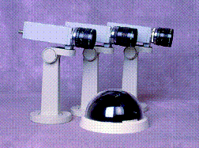

![[Oslonett Home]](/graphics/home.gif)
![[Oslonett Markedsplassen]](/graphics/market.gif)


Det finnes tilkoblingsmulighet for video-opptaker som tar opp alle hendelser før, under og etter en alarmsituasjon, inntil 720 timer pr. VHS-kassett.
Vi har alle typer kamera. Spesielt vil vi få fremheve våre diskrete, takmonterte domer, som går inn i ethvert miljø uten å virke provoserende. Disse kan være motoriserte og panorere jevnlig i et definert mønster. Ved alarm vil de i brøkdelen av et sekund stille seg inn på forhåndsbestemte mål, f. eks. kasse, safe, fluktvei, inngangsparti osv. for sikring av bevis.
Svinnforebyggende oblater “Området er TV-overvåket” medfølger.